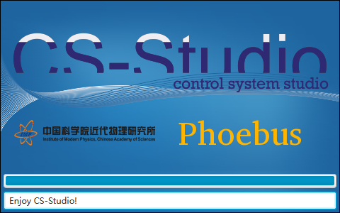

Navigation
index
next
|
Phoebus 1.0 documentation
»
欢迎访问 CS-Studio/Phoebus 使用手册！
欢迎访问 CS-Studio/Phoebus 使用手册！
¶

User Documentation:
Introduction
Starting CS-Studio/Phoebus
Window Environment
Preference Settings
Runtime Settings
Authorization
Applications
Services
Developer Documentation:
Developer Information
Architecture
Locations
Help System
Localization
Preferences Listing
Change Log
Appendix
¶
Index
Module Index
Search Page
Table of Contents
欢迎访问 CS-Studio/Phoebus 使用手册！
Appendix
Next topic
Introduction
This Page
Show Source
Quick search
Navigation
index
next
|
Phoebus 1.0 documentation
»
欢迎访问 CS-Studio/Phoebus 使用手册！